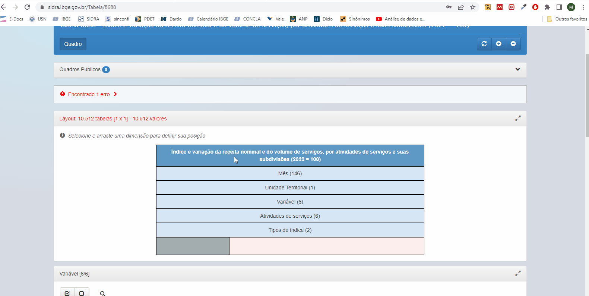
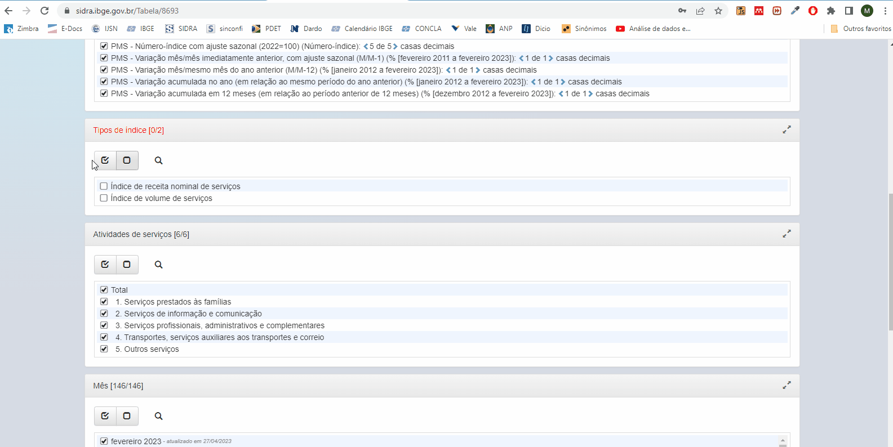

Tutorial de atualização da resenha de Serviços
1 Procedimentos iniciais
- Na pasta da resenha de serviços, crie uma subpasta para o mês de referência da resenha que será eleborada (Figura 1).
- Copie os arquivos em Excel e Word da pasta do mês anterior para pasta que você criou Figura 2.
- Consulte a planilha de numeração das resenhas disponível na descrição do grupo de WhatsApp da CEE. Selecione o primeiro número que não está marcado em vermelho. Nas colunas ao lados da tabela de numeração, indique o número que você selecionou e o nome da resenha (Figura 3 e Figura 4).

- Renomeie os arquivos de acordo com o ano, mês e numeração da resenha, conforme Figura 5.
- Abra o arquivo Excel e reexiba as abas “tabela5906”, “tabela8688”, “tabela8693”, “tabela8694” e “Gráficos” (Figura 6).
2 Tabela 5906
- Em Layout, organize a tabela conforme Figura 8.

- Em Variáveis, selecione todas (Figura 9):

- Em Tipo de índice, selecione todos (Figura 10):
- Em Mês, selecione todos (Figura 11).

- Em Unidade Territorial, selecione Brasil e todas as Unidades da Federação (Figura 12):
- Para baixar a tabela, clique no botão “Download” e em “Formato”, selecione “CSV (BR)” e clique em “Download”. Atenção: a tabela deve ser baixada EXCLUSIVAMENTE no formato “CSV (BR)” (Figura 13).
- Copie os dados baixados e cole na aba “tabela5906” do arquivo Excel da resenha (Figura 14).
3 Tabela 8688
- Em Layout, organize a tabela conforme Figura 16:

- Em Variáveis, selecione todas (Figura 17):
- Em Tipo de índice, selecione todos (Figura 18):
- Em Atividades de serviços, selecione “1. Serviços prestados às famílias”, “2. Serviços de informação e comunicação”, “3. Serviços profissionais, administrativos e complementares”, “4. Transportes, serviços auxiliares aos transportes e correio”, “5. Outros serviços”, conforme figura abaixo (Figura 19):
- Em mês, selecione todos (Figura 20):
- Em Unidade Territorial, selecione Brasil (Figura 21):
- Para baixar a tabela, clique no botão “Download” e em “Formato”, selecione “CSV (BR)” e clique em “Download”. Atenção: a tabela deve ser baixada EXCLUSIVAMENTE no formato “CSV (BR)” (Figura 22):
- Copie os dados baixados e cole na aba “tabela8688” do arquivo Excel da resenha (Figura 23).
4 Tabela 8693
- Em Layout, organize a tabela conforme a Figura 25:
- Em Variáveis, selecione todas (Figura 26):
- Em Tipo de índice, selecione todos (Figura 27):

- Em Atividade de serviços, selecione todas (Figura 28):
- Em Mês, selecione todos (Figura 29):
- Em Unidade Territorial, selecione todas Figura 30:
- Para baixar a tabela, clique no botão “Download” e em “Formato”, selecione “CSV (BR)” e clique em “Download”. Atenção: a tabela deve ser baixada EXCLUSIVAMENTE no formato “CSV (BR)” (Figura 31):
- Copie os dados baixados e cole na aba “tabela8693” do arquivo Excel da resenha (Figura 32).
5 Tabela 8694
- Em Layout, organize a tabela conforme a figura Figura 34:
- Em Variável, selecione todas (Figura 35):
- Em Tipos de índice, selecione todos (Figura 36):
- Em Mês, selecione todos (Figura 37):
- Em Unidade Territoral, selecione Brasil e Unidades da Federação (Figura 38):
- Para baixar a tabela, clique no botão “Download” e em “Formato”, selecione “CSV (BR)” e clique em “Download”. Atenção: a tabela deve ser baixada EXCLUSIVAMENTE no formato “CSV (BR)” (Figura 39):
- Copie os dados baixados e cole na aba “tabela8694” do arquivo Excel da resenha (Figura 40).
6 Procedimentos finais
- Após a atualização dos dados , copie da “tabela5906” os dados necessários para atualização do card e oculte as abas “tabela5906”, “tabela8688”, “tabela8693” e “tabela8694”.

- Vá na aba “Sumário” e selecione o mês de referência. Feito isso, todos os gráficos e tabelas do arquivo Excel serão atualizados automaticamente.